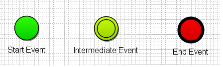
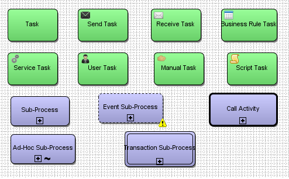
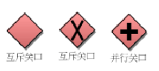

BPMN
BPMN四种基本元素是：
流对象（Flow Objects）
1、事件（Event): Event 用一个圆圈表示，它是流程中运行过程中发生的事情。事件的发生会影响到流程的流转.事件包含Start\Intermediate\End三种类型 -- 开始，中间以及终止事件

2、活动（Activity）
活动用圆角矩形表示，一个活动多个活动组成，活动的类型分为Task和Sub-Process。如下下图：
3、网关（Gateway）：用菱形表示，用来控制流程的分支和聚合，常用的是“互斥关口”，表示后续分支只能选择一条路线进行任务流转

连接对象（Connecting Object)
1、Sequence Flow，序列流： 用实线实心箭头（实线+实心三角箭头）表示，代表流程中将被执行的活动的执行顺序
2、Message Flow，消息流：用虚线空心箭头（虚线+空心三角箭头）表示，用来表示2个分开的流程参与者（业务实体或业务角色）之间发送或者接收到的消息流
3、Association，关联： 点状虚线（-------〉）表示，用于显示活动的输入输出
泳道（Swimlanes）
1.Pools 池： 池描述流程中的一个参与者。可以看做是将一系列活动区别于其他池的一个图形容器，一般用于B2B的上下文中。
2.Lanes 道： 道就是在池里面再细分，可以是垂直的也可以是水平的。道也是用于组织和分类活动。
附件（Artifacts）
1.Group 组： 组用一个虚线的圆角矩形表示，用于记录或分析的目的，但不影响顺序流。
2.Text Annotation 文本注释： 注释是建模者为BPMN图的读者提供附加文本信息的一个机制。